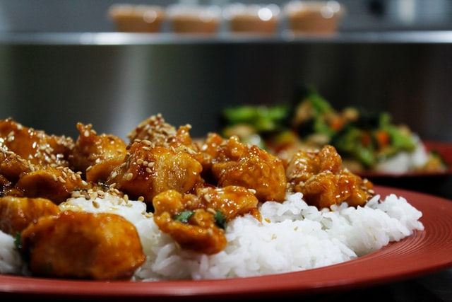

Home
Teriyaki Chicken Recipe

Worlds Best Teriyaki Chicken Recipe
This Teriyaki Chicken recipe will quickly become a new favorite! In this one pan recipe, bite size chicken breasts pieces are sautéed in a skillet then coated with an easy and deliciously flavorful sauce.
Ingredients
- 1 1/4 lbs. boneless skinless chicken breasts, diced into 1-inch cubes
- 1 Tbsp olive oil
- 1/4 cup low-sodium soy sauce
- 2 Tbsp honey
- 1 Tbsp rice vinegar
Steps
- Heat olive oil in a 12-inch non-stick skillet over medium-high heat.
- Add in chicken and let brown on bottom about 3 - 4 minutes then flip
- While chicken is cooking, in a small mixing bowl (or liquid measuring cup) whisk together soy sauce, water, honey, brown sugar, rice vinegar, sesame oil, ginger, garlic and cornstarch.
- Stir the sauce in with the cooked chicken and continue to cook and toss until sauce has thickened, about 30 - 60 seconds longer.
- Serve warm garnished with green onions and sesame seeds if desired.
Sources
Image Unsplash
Intro from Wikipedia